Overview
Abstract
Feed-forward 3D reconstruction models have achieved impressive performance by scaling model and dataset size, but their cost excludes most research groups and precludes edge deployment. Additionally, generating 3D supervision without sensors still relies on slow, unreliable Structure-from-Motion, as the community lacks a COLMAP-like system for neural 3D pseudo-label generation. We present OTT3R (RGB-Only Tiny Transformer for 3D Reconstruction), a knowledge distillation framework that addresses both problems on a single workstation equipped with 2 GPUs. Distilling π³ (959M parameters) into a 102M-parameter student yields 9.4× compression and up to 7× faster inference, trained at 1.6% of VGGT's training compute. An integrated pseudo-label pipeline offers a reliable, high-throughput alternative to COLMAP, generating dense per-pixel point maps and SE(3) camera poses for a 667K-image corpus in 3.5 hours on two commodity GPUs and succeeding on every sequence we tested, including those where COLMAP fails. The general student tracks the teacher on in-distribution monocular depth and, zero-shot, outperforms COLMAP on 7-Scenes and on DTU completion, but it does not replace the teacher on out-of-distribution multi-view geometry. The deployable artifact is the domain-specialized student: after specialization at 0.2% compute, it is 4× more accurate than COLMAP on 7-Scenes at 980× throughput, with near-teacher completion.
Method
Cache generation and student training are fully decoupled: the teacher π³ is run once over all source datasets and its outputs are quantized and stored, after which training reads only from this cache and the teacher is never invoked again. This is what makes single-workstation training tractable: the 959M-parameter teacher forward pass, the dominant cost, is amortized across every epoch rather than repeated.
1 · Pseudo-label generation pipeline
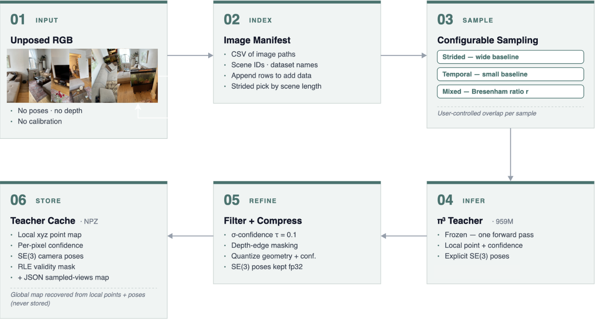
2 · Offline distillation of a compact student
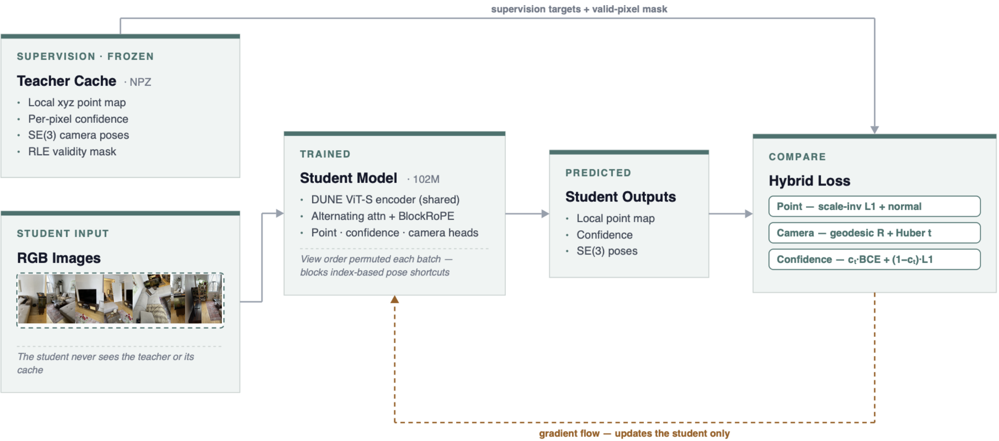
Qualitative results
Multi-view reconstruction on 7-Scenes
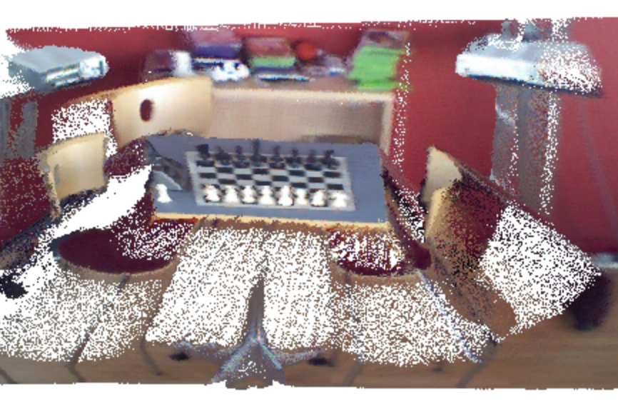
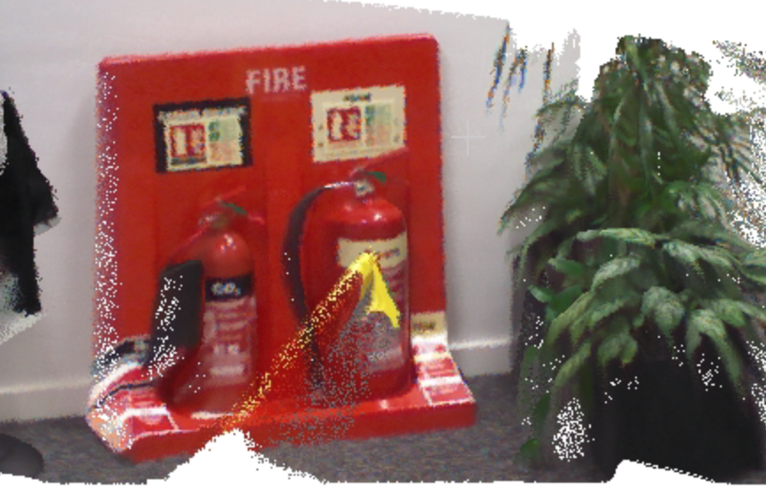
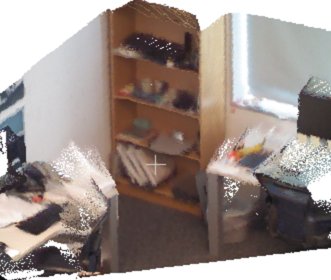
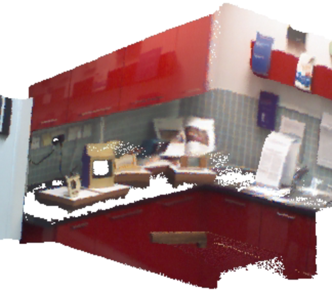
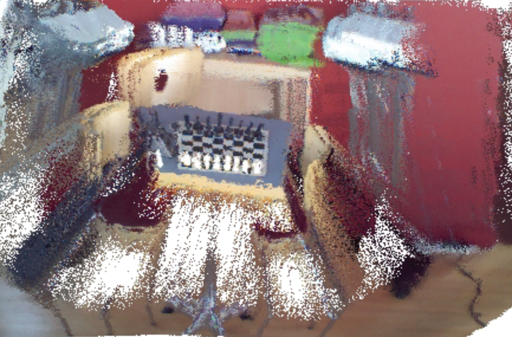
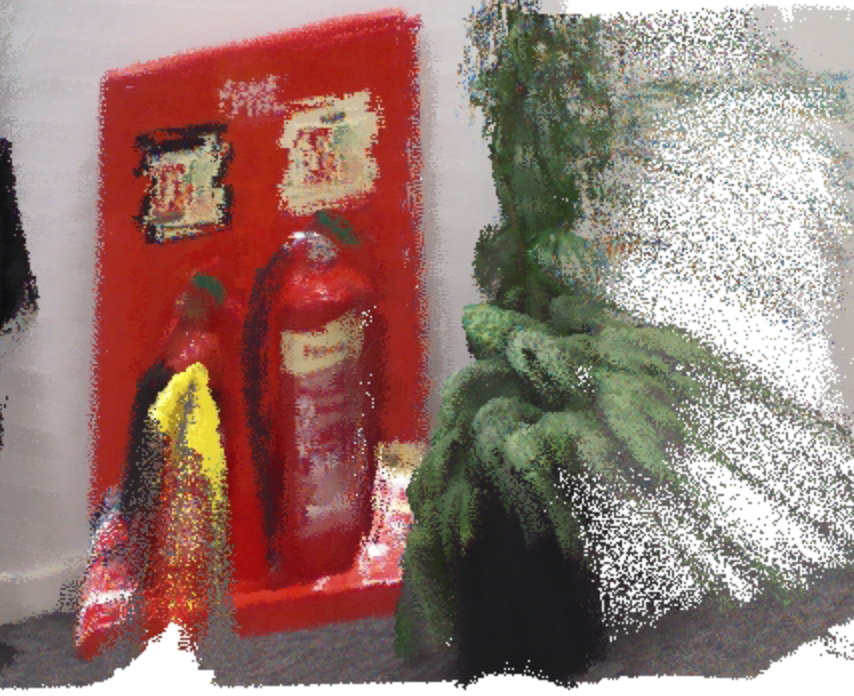
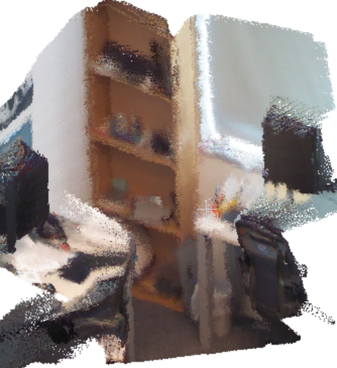
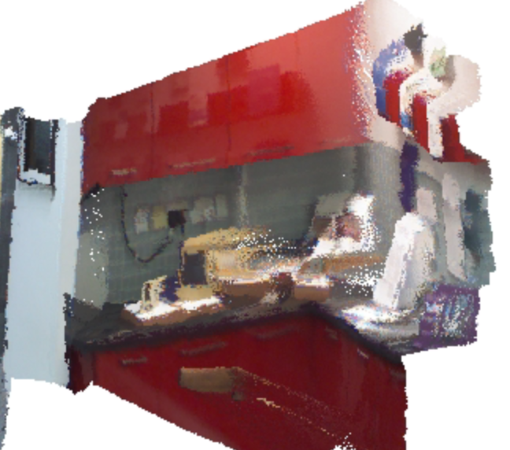
Sampling strategy: temporal vs. strided (CO3D)
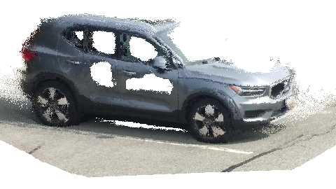
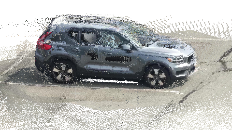
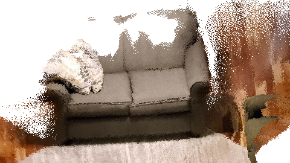
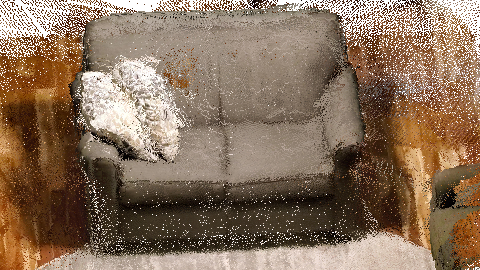
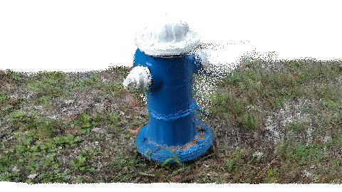
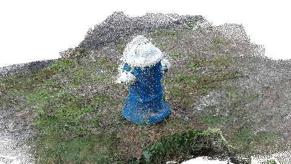
Results
Depth quality
| Dataset | Model | Params | Abs Rel ↓ | δ<1.25 ↑ |
|---|---|---|---|---|
| ARKitScenes | π³ | 959M | 3.64% | 98.8% |
| ARKitScenes | OTT3R (base) | 102M | 4.91% | 97.0% |
| Habitat | π³ | 959M | 3.96% | 98.3% |
| Habitat | OTT3R (base) | 102M | 7.05% | 93.9% |
| 7-Scenes | π³ | 959M | 2.50% | 98.9% |
| 7-Scenes | OTT3R (base) | 102M | 13.07% | 85.7% |
| 7-Scenes | OTT3R (domain) | 102M | 5.72% | 98.1% |
Student depth quality vs teacher on diverse datasets. The π³ rows also give the quality of our pseudo-labels. Per-view depth is aligned to ground truth by median scaling before computing Abs Rel and δ<1.25.
Camera pose on CO3D
| Method | Ref. | RRA@5 ↑ | RRA@30 ↑ | Med. rot.° ↓ | Med. trans. ↓ |
|---|---|---|---|---|---|
| π³ Teacher | GT | — | 99.0 | — | — |
| OTT3R (temporal) | π³ | 61.9 | 96.1 | 2.8 | 0.047 |
| OTT3R (strided) | π³ | 38.7 | 65.3 | 15.3 | 0.264 |
| OTT3R (all) | π³ | 50.3 | 80.7 | 4.9 | 0.081 |
The teacher is measured against ground truth; student rows measure agreement with the teacher poses it distills, not absolute accuracy. Median translation in teacher scale.
Inference efficiency
| Method | Params | Lat. N=32 | N=64 | N=128 | Mem. N=32 | N=64 | N=128 |
|---|---|---|---|---|---|---|---|
| VGGT | 1B | 2.28 | 6.40 | OOM | 33.98 | 38.41 | OOM |
| Fast3R | 650M | 1.14 | 3.26 | 10.11 | 12.11 | 21.11 | 44.36 |
| π³ Teacher | 959M | 1.49 | 4.30 | 12.82 | 7.07 | 8.99 | 12.34 |
| Distill3R | 72M | 0.41 | 1.02 | 2.69 | 9.97 | 21.80 | 31.90 |
| OTT3R | 102M | 0.24 | 0.68 | 2.20 | 1.83 | 2.93 | 5.20 |
Inference latency (s) and peak memory (GB) on RTX 6000 Ada at 518×224, across view counts N. OTT3R is 6.2× faster than its teacher at 32 views using roughly a quarter of the memory; the gap widens with sequence length.
Cache generation scaling
| GPUs | Workers | Throughput (img/s) | Full cache |
|---|---|---|---|
| 1 | 1 | 23.1 | 7h 44m |
| 1 | 2 | 23.0 | 7h 58m |
| 2 | 1 | 22.9 | 3h 50m |
| 2 | 2 | 22.9 | 3h 37m |
| 2 | 16 | 22.5 | 3h 20m |
Cache generation scaling on RTX 6000 Ada and wall-clock for the full 667K-image cache. Generation is GPU-bound, so throughput is stable across worker counts and wall-clock scales linearly with GPU count.
Code & usage
Generate a manifest, cache teacher pseudo-labels once, then distill the student. Any practitioner can specialize a compact 3D reconstruction model to their target domain in under a day, recovering near-teacher quality at a fraction of the inference cost and compute. See the repository README for full setup and dataset instructions.
# 1. Generate the image manifest
python utils/generate_manifest.py --config configs/data_paths_7scenes.yaml
# 2. Cache teacher (π³) pseudo-labels
python ott3r/teacher/ott3r_generator.py \
--manifest processed_data/images_7scenes/manifest.csv \
--cache-dir caches/teacher_cache_7scenes --num-gpus 2
# 3. Train the student
python ott3r/train.py --config configs/ott3r_7scenes.yaml
# 4. Inference → colored point cloud
python utils/inference.py path/to/images/ --checkpoint checkpoints/ott3r/last.ckpt
Citation
@inproceedings{leblanc2026ott3r,
title = {OTT3R: Multi-View 3D Reconstruction and Fast Dataset Generation at 1\% Compute},
author = {Leblanc, Brandon and Poullis, Charalambos},
booktitle = {Proceedings of the Asian Conference on Computer Vision (ACCV)},
year = {2026}
}
Acknowledgments
OTT3R builds on π³ (Pi3), DUNE, and DINOv2. We thank their authors for making their work publicly available. This research was supported in part by the Natural Sciences and Engineering Research Council of Canada (NSERC DG RGPIN-2021-03479 and NSERC CGS-M).